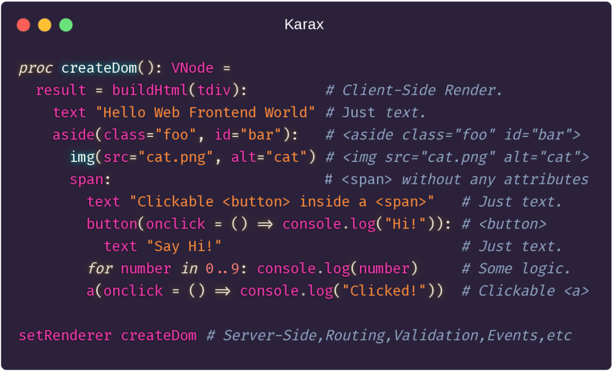
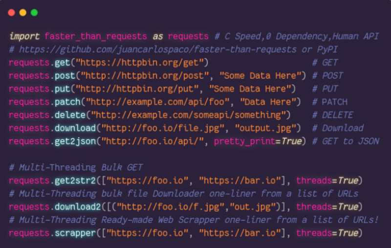
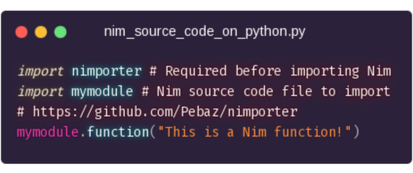

Intro a Nim

...para Pythoneras

- Python Syntax y rendimiento de C.
- Compilado (1 archivo binario ejecutable).
- Tipado estatico fuerte con Inferencia.
- Compila C/C++/ObjC/JavaScript/NodeJS (DOM API).
- Linux, Windows, Mac, Web, Raspi, ARM, IoT, etc.
- Facil hacer modulos Python. Facil usar librerias C.
- Administrador de Paquetes, 1500+ Paquetes.
- Documentacion online completa con ejemplos.
- Targets comunidad LLVM,Vulkan,WebGL,OpenGL,etc.
Las APIs mas bonitas que vas a ver
- Compile-Time Postgres/SQLite ORM (Raw-Query Performance).
UNION,JOIN,INTERSECT,CASE, SQL Prepared, and more.

Las APIs mas bonitas que vas a ver
- Async MultiThread Web Framework Jester.

Las APIs mas bonitas que vas a ver
Frontend Client-Side Reactive VirtualDOM SPA Framework Karax.

Para que sirve?
- Frontend funciona similar a Svelte. Python simil Cython. Backend onda Rust.
- Databases (Postgres y SQLite en std lib, Compile-Time ORM, Mongo).
- Machine Learning, AI, HPC, Tensors (PyTorch, Arraymancer, Laser).
- FullStack web frameworks (NimWC, Karax, Jester, HTTPBeast).
- Desktop GUI (GTK3, Qt5 QML, OpenGL, WebView JS, WxWidget).
- Translation (Nimterlingua). Design (compila Figma a App con Fidget).
Que ventajas tiene?
- Todo tu Stack con 1 lenguaje, Backend+Frontend, Assembly a WebAssembly.
- Interoperabilidad con C/JS. Deploy simple (
scp). CompileTime FFI. HCR. - Usualmente lleva menos lineas de codigo que Python.
- Mas rapido de aprender comparado con Rust o C++.
- Binarios mas chicos que Rust y Go. Compilacion rapida.
- Programacion Inmutable, Funcional y OOP al mismo tiempo.
- AutoDocumentador y AutoFormateador de Codigo integrados.
Python usando Nim

- Libreria cliente HTTPS con web scraper multi-threading.
Sintaxis Python para Nim

https://github.com/Yardanico/nimpylib
Nimporter: Importar Nim en Python
Compila extensiones Nim para Python al importarlas automaticamente!. Simplemente importas codigo Nim como si fuera codigo Python.

Nim en Python Virtualenv
Instala Nim adentro de un Virtuelenv de Python. PIP instalable. Podes hacer JavaScript Frontend y tener todo integrado en 1 Virtualenv.
Herramientas
nim check,nimble check➡️ Lintersnim doc,nim rst2html,nim rst2tex➡️ Documentacionnimble init➡️ Template de projectonimble tasks➡️ Task Runnernimble publish➡️ Publicar paquetesnimpretty➡️ AutoFormateador de codigoniminst➡️ AutoGenerador de instaladorestestament➡️ Tests Runner avanzadoc2nim➡️ Portar codigo C a Nimkoch➡️ Desarrollar Nim en si mismo- https://nimble.directory ➡️ Registro de Paquetes
- Toda herramienta de C/C++/JS sirve (gdb, etc).
Generador de Documentacion
Formato entrada:
- Codigo fuente Nim
*.nim - ReStructuredText/Markdown.
Formato salida:
- HTML5 (TOC, Search, links, index, etc).
- LaTeX.
- ODT (LibreOffice).
- JSON.
Uso:
- Comentarios con
##ReStructuredText/Markdown. - No hay que instalar nada extra para usarlo.
Interprete Interactivo

nimble install inimonim secret.
Inmutable
varMutable, como en Python.letInmutable, solo lectura.constInmutable, tiempo de Compilacion.
>>> var foo = "Esta variable puede cambiar"
>>> foo = "Otra cosa"
>>>
>>> let bar = "Esta variable No se puede cambiar"
>>> bar = "Da Error"
Error: 'bar' cannot be assigned to
>>>
>>> const baz = "Constante de Compilacion"
>>> baz = "Da Error"
Error: 'baz' cannot be assigned to
|
Si se te complica, podes usar var en todos lados.
Ejecutar en Tiempo de Compilacion
const constante = "compile time"Constante de compilacion.include("incluir.nim")Copia el archivo entero en el lugar.staticRead("foo.json")Lee archivo entero y devuelve string.staticExec("1 + 1")Ejecuta argumentos y devuelve el retorno.static: echo("compile time")Ejecuta Bloques de codigo.- FFI, Regex, JSON, en tiempo de compilacion.
Lo que se ejecuta en tiempo de compilacion no tiene costo en tiempo de ejecucion.
De Python a Nim
def➡️proclambda➡️procf"{foo},{1+1}"➡️fmt"{foo},{1+1}"dict➡️tableNamedTuple➡️tupleset➡️HashSetb if a else c➡️if a: b else: cinline- Go
defer➡️ Nimdefer. - Go
channels➡️ Nimchannels. - JavaScript Arrows Functions en modulo
sugar.
Nim Unified Functions Call Syntax
- Todas las formas son validas y equivalentes.
>>> let foo = [1, 2, 3]
>>> foo.len()
3
>>> len(foo)
3
>>> foo.len.float # Dot chain.
3.0
|
Tipos Basicos
| Nim | Python | Ejemplo Nim | Ejemplo Python | Comentarios | |
|---|---|---|---|---|---|
string |
str |
"foo" |
"foo" |
Unicode, UTF8, Emoji, etc | |
string |
str |
"""bar""" |
"""bar""" |
String Multi-linea | |
char |
- | 'a' |
- | 1 char, Optimizado internamente a int | |
int |
int |
42 |
42 |
int8, int16, int32, int64, int | |
float |
float |
2.0 |
2.0 |
float32, float64, float | |
bool |
bool |
true, false |
True, False |
true, false en Nim | |
tuple |
tuple |
(1, 2, 3) |
(1, 2, 3) |
tuple de Nim es como NamedTuple de Py | |
seq |
list |
@[1, 2, 3] |
[1, 2, 3] |
Mismo Tipo en todos los items en Nim | |
set |
set |
{1, 2, 3} |
{1, 2, 3} |
int, char, bool en Nim | |
enum |
enum |
type enum |
? | En Python no los usa nadie | |
array |
- | [1, 2, 3] |
- | Tamanio fijo, mismo tipo en los items | |
subrange |
- | range[0..2] |
- | Solo acepta int de 0 a 2,puede usar float | |
concept |
- | type concept |
- | Tipos definidos por usuario,compile time |
Tipos de Nim estan optimizados para performance.
Velocidad
- Cualquier performance alcanzable con C es alcanzable con Nim.
- Puede usar Assembler inlined directamente.
- Usa poca RAM y funciona rapido en PC viejas.
- No necesita "preparar un ambiente" en la PC.
Ejemplo, mismo RayTracer implementado en varios lenguajes:

Peso
- Nim fue pensado para ser liviano (Raspi, Router, IoT, etc).
- Nim no incrusta Runtime, VM, Interprete, etc.
- HolaMundo Go 2Mb, HolaMundo Nim 20Kb.
$ echo 'echo "Hola Mundo"' > hello.nim
$ nim c -d:release --app:console --opt:size hello.nim
$ strip --strip-all hello
$ du -h hello
15K hello
|

NimScript
- Scripting MultiPlataforma, Nim en modo interpretado.
- Muchos modulos libreria standard disponibles.
- Configuracion, build (build tool).
- Puede usarse con Nimble.
- Puede usarse como multi-proposito (standalone).
- Extension de archivo
*.nims. - No se compila, usa
nim e archivo.nims. - Administrador de paquetes, test, docs, asserts.
Hola Mundo NimScript:
echo "Hola mundo"
|
Conectar con C
C:
int suma2Enteros(int a, int b) {return a + b;}
|
Nim:
{.compile: "suma.c".}
proc suma2Enteros(a, b: cint): cint {.importc.}
echo suma2Enteros(1, 2)
|
$ nim c -r ejemplo.nim
3
|
Conectectar con la Web
JavaScript ⟿ Nim
<!-- index.html --->
<script>function suma2Enteros(a, b) {return alert(a + b)}</script>
<script src="ejemplojs2nim.js"></script>
|
# ejemplojs2nim.nim
proc suma2Enteros(a, b: cint): cint {.importc.}
echo suma2Enteros(1, 2)
|
$ nim js -o:ejemplojs2nim.js ejemplojs2nim.nim
$ xdg-open index.html # Abre el Navegador Web.
|
Nim ⟿ JavaScript
<!-- index2.html --->
<script src="ejemplonim2js.js"></script>
<script>alert(suma2Enteros(1, 2))</script>
|
# ejemplonim2js.nim
proc suma2Enteros(a, b: cint): cint {.exportc.} = a + b
|
$ nim js -o:ejemplonim2js.js ejemplonim2js.nim
$ xdg-open index2.html # Abre el Navegador Web.
|
Conectar con Python
Nim:
import nimpy
proc funcioncita*(nombre: string): string {.exportpy.} = "Hola " & nombre
|
Python (2 o 3):
import nim2python
print(nim2python.funcioncita("Mundo"))
|
Instalar puente Python-Nim:
nimble install nimpy.
Compilar:
nim c --app:lib --out:modulo.so codigo.nim
Nim compila luego no requiere Nim para funcionar. Se puede subir a PyPI
Unittests
- Tests Runner amigable,
nim c -r test.nim.
suite "Nombre del test":
echo "Setup: Esto se ejecuta 1 vez ANTES de TODOS los Tests."
setup:
echo "Setup: Esto se ejecuta 1 vez ANTES de CADA Test."
teardown:
echo "Teardown: Esto se ejecuta 1 vez DESPUES de CADA Test."
test "ejemplo":
assert true
test "otro ejemplo":
check(1 != 1)
test "ejemplo con error esperado":
let foo = [1, 2, 3]
expect(IndexError):
echo foo[9]
echo "Teardown: Esto se ejecuta 1 vez DESPUES de TODOS los Tests."
|
Templates
Template reemplazan su invocacion con su contenido en tiempo de compilacion.
template templatecita(argumento0, argumento1: string, contenido: untyped): untyped =
echo 1 + 2 # Simula algo de logica "pre-cocida" dentro del template.
echo argumento0 # Se puede trabajar con todos los argumentos que recibe.
echo argumento1
# Las variables y nombres dentro de un template son solo locales por defecto.
var variable_injectada {.inject.} = "Gatitos" # No es solo local.
var variable_solo_local = "Perritos" # Si es solo local.
contenido # Se puede evaluar los contenidos que recibe.
templatecita("primer argumento", "segundo argumento"):
echo variable_injectada
# Error: undeclared identifier: 'variable_solo_local'.
# No esta Injectada con {.inject.}, no existe fuera del template.
# echo variable_solo_local
echo "Este es el contenido, el cuerpo del template."
|
Codigo que hackea codigo a nivel de codigo en compilacion !
Macros
Macros son como Templates pero en tiempo de ejecucion y hackean el AST al vuelo.
import macros
macro generate_hello(): typed =
parseStmt("""proc hello() = echo "hi" """)
generate_hello() # Generate a proc via Macros.
hello()
expandMacros: # Debug
generate_hello() # Generar y ver el codigo generado por el Macro.
|
Codigo que hackea codigo a nivel de AST en ejecucion !
Template Engine
- Template Engine integrado (ala Jinja, Jekyll, etc).
- Archivos
*.nimf, shebang y syntaxis Nim. - Lineas con
#es codigo Nim, sino literal verbatim.
#? stdtmpl | standard
#proc generateXML(name, age: string): string =
<xml>
<name>$name</name>
<age>$age</age>
</xml>
|
#? stdtmpl | standard
#proc generateHTML(title, content: string, tabs: openArray[string]): string =
<head><title> $title </title></head>
<body>
<ul>
#for tab in items(tabs):
<li><a href="${tab}.html">$tab</a></li>
#end for
</ul>
$content
A dollar: $$.
</body>
|
No confundir Template-Engine con Templates.
Garbage Collectors
RefC: Cuenta referencias, Default, deferred.markAndSweep: El mas Rapido, usa mas RAM.Boehm: El mas lento, usa menos RAM.Go: Clon de Go Lang.Regions: Stack regions, casi sin GC.none: Sin GC.--newruntime: Experimental, estilo Rust (no BorrowChecker).
Ejemplos
Levenshtein Distance
echo editDistance("Gato", "Pato")
|
Diff
# 2 txt ("The Call of Cthulhu", Lovecraft)
let txt0 = """I have looked upon all the universe has to hold of horror,
even skies of spring and flowers of summer must ever be poison to me."""
let txt1 = """I have looked upon all your code has to hold of bugs,
even skies of spring and flowers of summer must ever be poison to me."""
echo diffText(txt0, txt1)
|
Syntax Highliting
let code = """for x in $int.high: echo x.ord mod 2 == 0"""
var toknizr: GeneralTokenizer
initGeneralTokenizer(toknizr, code)
while toknizr.kind != gtEof:
getNextToken(toknizr, langNim)
echo toknizr.kind
|
- Todo esto es Libreria Standard.
Nim Frontend
- Nim compila a JavaScript.
- Nim tiene API del DOM.
- JavaScript es "First Class Citizen".
- Nim wrappea Libs JS facilmente.
- Nim Frontend va muy rapido tambien.
- Hay paquetes con Libs Frontend en Nimble.
- Podes compilar Nim a JavaScript y usarlo en HTML Estatico.
- Se puede compilar a WebAssembly.
Ejemplos:
- Frontend SPA (React-like) https://github.com/pragmagic/karax
- Foro Nim esta hecho en Nim https://forum.nim-lang.org
Paquetes interesantes Terminal:
- Colores https://github.com/molnarmark/colorize
- Spinners https://github.com/molnarmark/spinny
- ProgressBar https://github.com/euantorano/progress.nim
- Graficos https://github.com/FedericoCeratto/nim-dashing
- Configs https://github.com/euantorano/dotenv.nim
Paquetes interesantes Web:
- Web Creator https://github.com/ThomasTJdev/nim_websitecreator
- Web Framework https://github.com/dom96/jester
- Markdown a HTML https://github.com/h3rald/hastyscribe
- Scrapper https://github.com/OpenSystemsLab/q.nim
- Jupyter Kernel https://github.com/stisa/jupyter-nim-kernel
- Plotly https://github.com/brentp/nim-plotly
- Poors Woman Design https://github.com/juancarlospaco/nim-random-font-color
Extras recomendados
- Homepage https://nim-lang.org
- Probar Nim desde el Browser https://play.nim-lang.org
- DevDocs http://devdocs.io/nim
- StackOverflow https://stackoverflow.com/questions/tagged/nim
- Rosetta http://rosettacode.org/wiki/Category:Nim
- Tutorial https://nim-lang.org/docs/tut1.html
- Syntax Python https://github.com/Yardanico/nimpylib
- GUI super facil https://github.com/juancarlospaco/nim-kdialog
- Awesome Nim https://github.com/VPashkov/awesome-nim
- Comunidad Online Nim AR https://t.me/NimArgentina
- Comunidad Online Nim EN https://t.me/nim_lang
Instalar
Linux & Mac
curl https://nim-lang.org/choosenim/init.sh -sSf | shWindows
Otros
- Docker, imagen
nimlang/nim. - Manual, codigo fuente en cualquier OS.
Solo requiere un Compilador de C.
Editor / IDE soporte para Nim

Vim, Emacs, Atom, Sublime, Kate, Gedit, Geany, KDevelop, VS Code, Spacemacs, NeoVim, Notepad++, LightTable, Aporia, etc etc...
Nim necesita mas Comunidad

https://t.me/NimArgentina
Sumate!, Nim tiene cosas aun mas interesantes; Que empieze el hype !